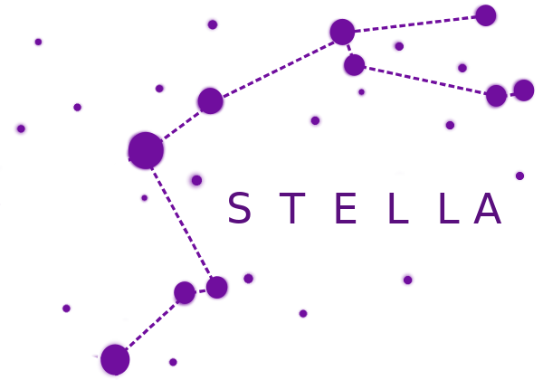

stella v0.5.0 API Reference
Modules
Documentation for Binary search tree data structure.
Documentation for Binary search algorithm
Documentation for Bubble sort algorithm. All important
informations about counting sort you can find on
Wikipedia page.
Documentation for Counting sort algorithm. All important
informations about counting sort you can find on
Wikipedia page.
Documentation for Fibonacci sequence.
Documentation for Insertion sort algorithm. All important
informations about counting sort you can find on
Wikipedia page.
Documentation for PriorityQueue data structure implemented on general balanced trees by Arne Andersson
These have no storage overhead compared to unbalanced binary trees, and
their performance is better than AVL trees.
Documentation for Quick sort algorithm. All important
informations about counting sort you can find on
Wikipedia page.

Documentation for Vector 2D.
Documentation for Vector 3D.